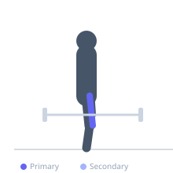
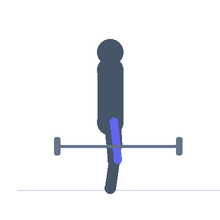

Exercise guide / Reverse Nordic Curl
Reverse Nordic Curl
The reverse Nordic curl is an eccentric quadriceps exercise in which the knees are on a padded surface, the feet are anchored, and the torso leans backward — the opposite direction of the Nordic hamstring curl. The rectus femoris is loaded eccentrically in its stretched position (hip extended, knee flexed) with the bodyweight acting as the resistance. It is one of the few exercises that trains the rectus femoris under hip-extension load with significant knee flexion, complementing the knee-extension exercises commonly used for quad training.
Primary muscles
rectus femoris
vastus lateralis
vastus medialis
Secondary muscles
iliacus
psoas major
Stabilizers
erector spinae
transverse abdominis
Equipment
No Equipment (Bodyweight)


Starting position
- Kneel on a padded surface with feet anchored behind (partner or weighted barbell). Start upright on the knees with hips extended.
Setup
- Ankle anchoring is required. Use a partner holding the heels or secure the feet under a barbell. Generous knee padding is essential.
Steps
- Step 1: Kneel upright with feet secured and hips fully extended. Hold the arms across the chest or overhead for progression.
- Step 2: Begin to lean backward by allowing the knees to flex — the body leans away from the anchored feet.
- Step 3: The quadriceps eccentrically control the backward lean. Lower as far as quad strength allows.
- Step 4: Return to the upright kneeling position using the quadriceps concentrically, or use the hands to push off the floor if needed.
- Step 5: Complete the prescribed reps.
Coaching cues
- Lean back as one unit — don't fold at the hip
- Quads on — squeeze them to slow the fall
- Catch with hands if needed — that's normal for beginners
Breathing
- Exhale as you lean back. Inhale as you return to vertical.
Range of motion
- Lean as far back as quad strength controls. Begin with minimal range (10–20°) and build progressively.
Tempo
- 5-0-1-0 — the eccentric (leaning back) is the entire stimulus; control it maximally
Common mistakes
- Hinging at the hip instead of leaning backward as a whole-body unit from the knees
- Dropping too fast in early training, causing excessive DOMS or quad strain
- Not using knee padding, making the exercise unpleasant and unsustainable
Safety
- Severe DOMS is likely after first exposure — start with 2–3 short-range reps
- Avoid if experiencing patellar tendinopathy — consult a clinician
- If unable to control even a minimal backward lean, build quad strength with leg extensions before attempting
Training
- strength: 3–8 reps
- hypertrophy: 5–12 reps
- endurance: 8–15 reps
- strength: 2–4 sets
- hypertrophy: 2–4 sets
- endurance: 2–3 sets
- Rest: {'strength': 180, 'hypertrophy': 120, 'endurance': 90}